pyvista.Camera#
- class Camera(renderer=None)[ソース]#
VTK CameraクラスのPyVistaラッパー．
- パラメータ
- renderer
pyvista.Renderer,optional カメラを装着するレンダラ．
- renderer
例
pyvistaモジュールレベルでカメラを作成します．
>>> import pyvista >>> camera = pyvista.Camera()
プロッタのアクティブカメラにアクセスし，カメラの位置を取得します．
>>> pl = pyvista.Plotter() >>> pl.camera.position (1.0, 1.0, 1.0)

メソッド
カメラのディープコピーを取得します．
平行投影の使用を無効にします．
平行投影を有効にします．
可視アクターの境界に基づいてカメラのクリッピング範囲をリセットします．
Camera.tight([padding, adjust_render_window])アクターがレンダラー全体を埋め尽くすようにカメラ位置を調整します．
Camera.view_frustum([aspect])視錐台を取得します．
Camera.zoom(value)カメラのズームを設定します．
アトリビュート
カメラの方位角．
クリッピング・プレーンの位置を返す，または設定します．
カメラ位置から焦点までのベクトル．
カメラから焦点距離の距離を返す，または設定します．
画面の垂直方向の回転．
全体座標におけるカメラの焦点の位置．
平行投影が設定されている場合はTrueを取得します．
カメラのモデル変換行列を返すか設定します．
平行投影の状態を取得します．
平行投影に使用されるスケーリングを返すか設定します．
全体座標でのカメラの位置を返すか設定します．
投影方向を中心にカメラを回転します．
クリッピング平面間の距離を返す，または設定します．
カメラの "up" または設定します．
カメラビューの角度を取得または設定します．